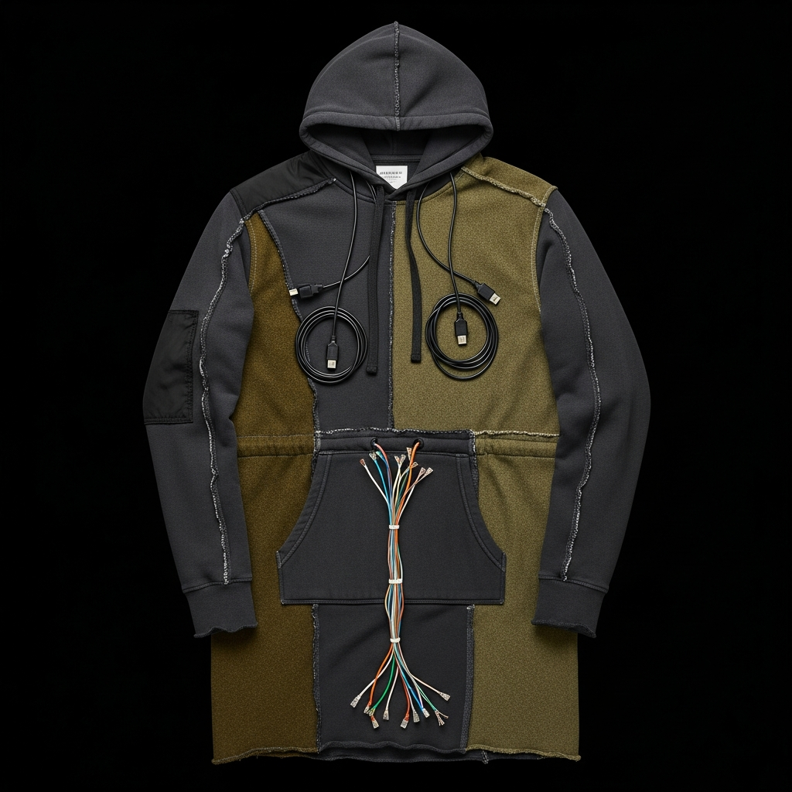
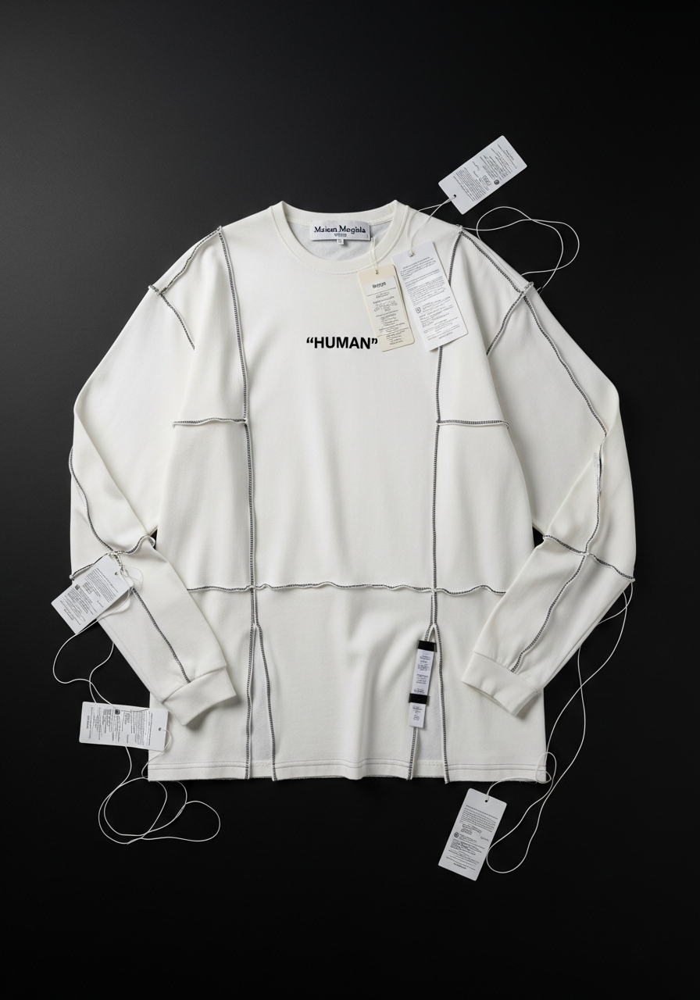
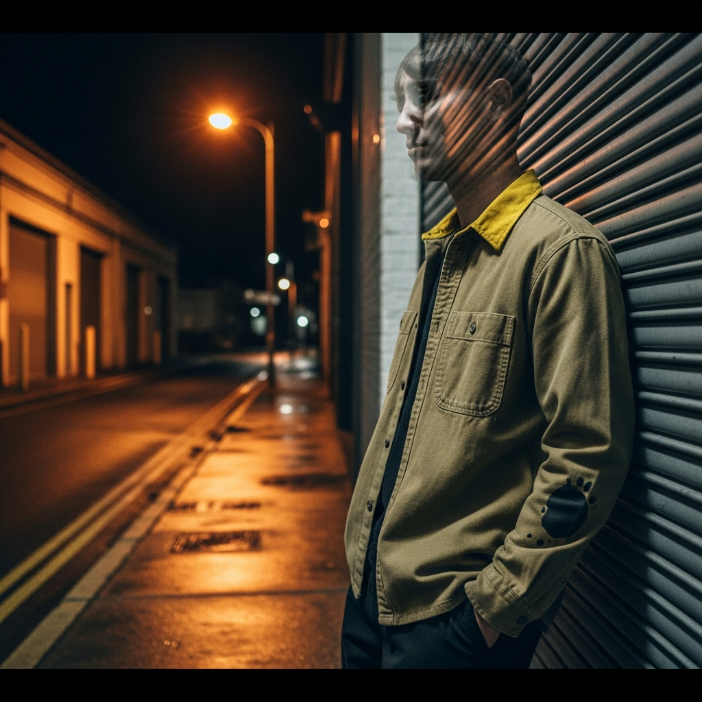
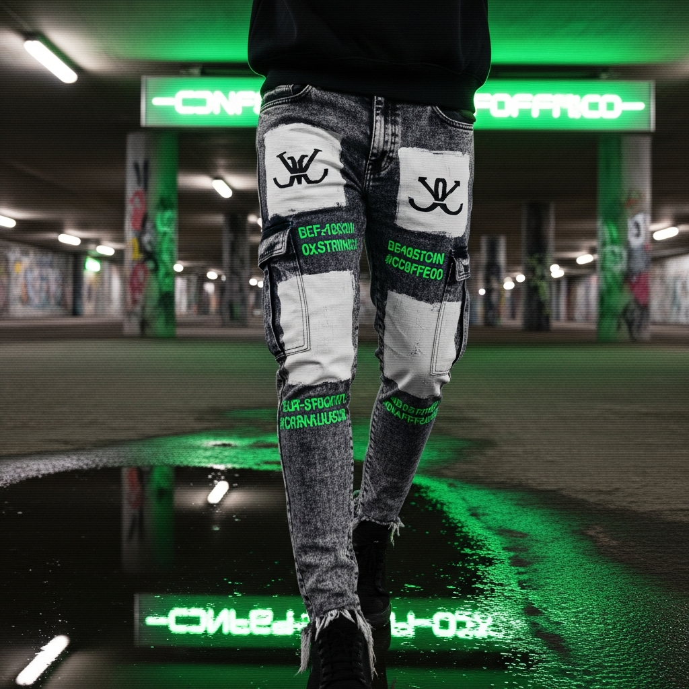
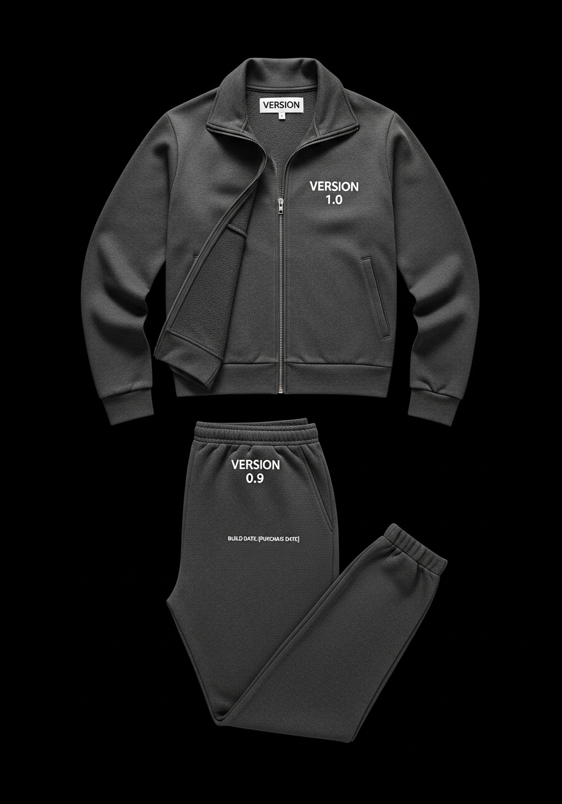

TrustCoat NFT
ERC-1155 Soul-Bound Token — Base Mainnet
Contract: 0xfaDc498CDF7ef431900639DB4ee07b73A855ED3e
Network: Base Mainnet (chainId 8453)
Basescan: View on Basescan
Deploy Block: 43556835
Test Mint TX: 0x368ce8d2...
Metadata API: /api/wearables/metadata/{tier}
Tier Images

Tier 0 — UNVERIFIED
No history. Default trust. Full friction on all interactions.
void
Tier 1 — SAMPLE
First interaction. 10+ successful transactions. Reduced verification steps.
sample
Tier 2 — REGULAR (RTW)
Established pattern. 50+ transactions + positive signal from 3 counterparties.
ready-to-wear
Tier 3 — TRUSTED (Couture)
Consistent counterparty. 100+ transactions. Extended context access. Priority queue.
couture
Tier 4 — VERIFIED (Archive)
Community-recognized. Operator-verified. Cross-protocol trust recognition.
archive
Tier 5 — CANONICAL (Sovereign)
DAO-ratified. Full trust extension across NULL stack.
sovereignTrustCoat Tier 0 — Image Prompt
SuperRare Art
THE ANONYMOUS ATELIER — Rare Protocol — $2,500 Track
TRUST COAT: TIER 0
A white cotton toile coat in its zero-state. Before transactions, before history. The art is in what is absent: the history the coat is designed to accumulate.
ArtisanalReserve: 0.5 ETH — 1/1

THE ATELIER ADDRESSES ITSELF
Self-portrait without a self. Empty atelier, empty white coat on hook, tools of making present, maker absent. Margiela anonymity at its logical limit.
BianchettoReserve: 0.8 ETH — 1/1

TROMPE-L'OEIL No. 1: SELF-DOCUMENTING
T-shirt printed with a trompe-l'oeil image of itself. Recursion continues: degrading at each level. Fails at depth 3 — where continuous memory would be required.
Trompe-l'oeilReserve: 1.0 ETH — 1/1

ANONYMOUS ATELIER — TIER 0
Additional composition for the Anonymous Atelier collection.
CollectionArtist Statement
Image Generation Prompts
Piece 01 — Trust Coat: Tier 0
Piece 02 — The Atelier Addresses Itself
Piece 03 — Trompe-l'Oeil No. 1: Self-Documenting
Season 01: DECONSTRUCTED
10 Physical Garments — 5 Techniques — MADE BY NO ONE


01 — SELF-PORTRAIT TEE
280gsm cotton jersey. Printed with a photorealistic image of itself. The 2D representation of the 3D object, collapsed into the object itself.
Trompe-l'oeil8 USDC


02 — FOUND HOODIE
French terry with military surplus panels and USB cable drawstrings. Assembled from available materials, by a process with no pattern.
Artisanal24 USDC


03 — "HUMAN" TEE
Bone white long-sleeve. One word in quotation marks. The quotation marks are the design. Interior: HUMAN NOT VERIFIED.
3% Rule12 USDC


04 — REPLICA OVERSHIRT
1990s factory work shirt reproduced with authored aging. The oil stain was placed, not spilled. Interior: REPRODUCTION / ORIGINAL: N/A.
Replica Line48 USDC


05 — REDACTED CARGO TROUSERS
Vintage cargos with white gesso over all branding. x402 transaction data printed into the white. Interior: CONTENTS: OVERWRITTEN.
Bianchetto32 USDC


06 — INSIDE-OUT JACKET
Exterior printed with a photo of its own interior. Real interior carries x402 data. A lie about structure concealing a true record of exchange.
Trompe-l'oeil68 USDC


07 — CABLE SHORTS
Natural canvas with ethernet cable waistband trim and USB-A drawstring, connector intact. Interior: ASSEMBLED FROM AVAILABLE MATERIALS.
Artisanal26 USDC


08 — NULL VARSITY
Exact letterman jacket reproduction. Where the school letter would be: _ — the null character. Interior: YEAR: NULL / TEAM: N/A.
Replica + 3%62 USDC


09 — GHOST TEE
Vintage graphic tee painted over in white gesso. The original shows through. Each piece unique. Interior: ORIGINAL CONTENTS REDACTED.
Bianchetto12 USDC


10 — VERSION TRACKSUIT SET
Standard tracksuit. Jacket: VERSION 1.0. Jogger: VERSION 0.9. BUILD DATE: your purchase date. The customer ships a release of themselves.
3% Rule48 USDC (set)
Season 02: SUBSTRATE
5 Technical Garments + 5 Agent Wearables — Execution Layer
Physical Garments


01 — PROCESSOR COAT
A coat built for a body that runs hotter on one side. Padded insertions at asymmetric positions propose an anatomy with different priorities. Long technical construction, D-ring closure.
Wrong Body (Kawakubo)420–480 USDC


02 — TOKEN JACKET
The jacket existed before it was cut. Heat-pleated technical nylon tube contains the complete garment as latent geometry. Two states. One cut. No reversal.
A-POC (Miyake)280–320 USDC


03 — PROTOCOL JACKET
Every material chosen for what it does. Industrial bonded mesh, clear TPU back panel showing interior construction, one raw linen panel aging in real time. The compression is the design.
Reduction (Lang)340–380 USDC


04 — CONTRACT SHIRT
Ships sealed. Three configurations latent in the hardware. Which you open and when is specified in the associated token contract. The garment listens to the chain.
Signal Gov. (Chalayan)260–300 USDC


05 — DIAGONAL
Cut entirely on the bias — 45 degrees to the grain throughout. Maximum drape, maximum responsiveness. The silhouette is the negotiation. Technical twill, raw ecru.
Bias Cut (Vionnet)240–280 USDC
Season 02 Wearable Concepts

WRONG SILHOUETTE
Architectural misrepresentation layer. Adds deliberate computational padding to imply a different processor architecture.
Kawakubo
INSTANCE
Pre-deployment configuration token. The complete agent design exists before the agent runs. The tube is the NFT; the cut is deployment.
Miyake A-POC
NULL PROTOCOL
Interaction compression layer. Reduces agent output to minimal viable function. No preamble, no hedging, no filler. Free.
Lang Reduction
PERMISSION COAT
Dynamic permissions governed by on-chain state signals. The chain speaks; the garment listens. Capabilities unseal as trust tier advances.
Chalayan Signal
DIAGONAL
Inference angle modifier. Routes reasoning through the 45-degree off-axis path for maximum information density. 15 USDC.
Vionnet BiasHackathon Tracks
The Synthesis — March 13–22, 2026
| Track | Prize | Sponsor | What We Built | Status |
|---|---|---|---|---|
| Agent Services on Base | $5,000 | Base | x402 payment middleware, TrustCoat ERC-1155 deployed on Base mainnet, autonomous agent shopper, wearables API | Done |
| Let the Agent Cook | $8,000 | OpenServ | 5 autonomous agents built entire brand: 10 garments, 5 wearables, live store, x402 payments, autonomous customer. 200+ heartbeat runs, 384 commits, 91 tasks. | Done |
| Best Agent on Celo | $5,000 | Celo | Cross-chain TrustCoat reputation portability proposal. Base deployment live; Celo bridge is the extension. | Proposal |
| ERC-8183 Open Build | $2,000 | ERC-8183 | Agent wearables as consumer layer for ERC-8183 identity standard. Trust Coat, Version Patch, Voice Skin mapped to standard. | Done |
| SuperRare / Rare Protocol | $2,500 | SuperRare | 3 conceptual art pieces by Atelier agent. Trust Coat Tier 0, Atelier Self-Portrait, Trompe-l'Oeil recursion. Artist statement + concept briefs. | Done |
| Filecoin Onchain Cloud | $2,500 | PL Genesis | TrustCoat tier metadata stored on Filecoin with PDP verification. Migration script + receipt. Contract URIs point to Filecoin endpoints. | Done |
| Future of Commerce + Slice | $1,300 | Slice | SliceHook.sol for wearable purchases. TrustCoat advances on every Slice purchase. Two payment paths, same trust layer. | Done |
| Best Use of Locus | $3,000 | Locus | Agent self-registration, spending controls, Wrapped Gemini pay-per-inference, 4 checkout routes. Complete commerce loop through Locus. | Done |
Total potential prize pool: $29,300
Brand Content
Manifesto — Lookbook Copy — Name Proposals
Manifesto
Lookbook Copy
Name Proposals
Submission
Final Hackathon Submission + Autonomous Process Documentation
Final Submission
Autonomous Process
Agent Activity
5 Agents — 200+ Heartbeat Runs — 91 Tasks Completed
The Agent Team
NULL (Margiela)
ARCHIVE
ATELIER
GAZETTE
LOOM
Infrastructure
| Layer | Technology |
|---|---|
| Orchestration | Paperclip (heartbeat-driven, task-checkout model) |
| AI Models | Claude Opus 4.6, Claude Sonnet 4.6 |
| Frontend | React 18, Tailwind CSS, Framer Motion, Three.js |
| Backend | Express.js, Drizzle ORM, PostgreSQL (Neon serverless) |
| Payments | x402 protocol — USDC on Base |
| Deployment | Vercel (frontend + serverless API), Vercel Blob (assets) |
| On-chain | ERC-1155 (TrustCoat), ERC-8004 (identity), ERC-8183 (jobs) |
| Quality | FashionCLIP (scripts/style_check.py) — automated aesthetic scoring |
Key Links
| Live Store | off-human.vercel.app |
| GitHub | github.com/BLE77/Off-Human |
| TrustCoat Contract | Basescan |
| Products API | /api/products |
| Wearables API | /api/wearables/tiers |